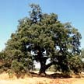
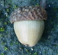
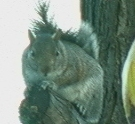

| Population Growth and Balance -- Introduction |
Introduction --
The main purpose of this lesson is to learn about population growth and balance. However, in presenting this topic other very interesting and relevant topics will also be covered, giving a broad picture of issues related to the study of population growth. The main topics that you'll be learning about are:
- Population Balance - You'll be using an actual computer model, implemented as a Java applet1, to do hands-on control of an ecosystem,
- Mathematical and Computer Models - The importance of both mathematical and computer models in the study of population growth will be described and analyzed to gain a good understanding of the tools used by Population Ecologists,
- Facts About the Populations - In order to understand the interaction between different populations, interesting facts about them will be discovered and learned,
- Nature Conservation - One of the goals of this lesson is, as you become more aware of the delicate balance of ecosystems and population growths, you'll become a strong supporter of nature and the environment.
The system that we will be working with is an oak tree forest where gray squirrels live together with red-tail hawks. The gray squirrels live off of the acorns produced by the oak trees, and the red-tail hawks' subsistence depends on the squirrels on which they prey. Here are a few pictures of the elements that you will be working with:
   The method used to understand and learn the different concepts will follow the scientific method that consists of:
- Observation - A problem or an observation that requires an explanation will be presented
- Hypothesis - You will propose a reason or an explanation to describe what or why it is happening
- Experiments - You will then design an experiment to test your theory and will use the computer model to verify it
- Theory - After running the experiment several times and proving the hypothesis, you'll be able to explain why the experiments give the results that they give.
Lesson Outline --
The lesson starts by describing the basic concepts of populations and ecosystems and then describes mathematical and computer models as background information. These topics are important to allow you to better understand the rest of the lesson. Next, the actual population model used in the last three sections is described followed by the specific instructions on how to use it. The three sections that follow are the actual hands-on sections where you will work on 10 experiments using the Java population model. The lesson concludes with a quiz that you should do as a self-assessment of your understanding of the concepts that are presented in this lesson.
A few technicalities before we get started --
- One of the objectives of this lesson is to present many concepts as close to the real facts as possible. However, some issues will be presented which are not 100% accurate. Every effort has been made to point out those issues.
- Special pages with many facts and definitions can be accessed to find out information or clarifications. You'll have to access these to be able to answer some of the questions throughout the lesson.
- Throughout the lesson you will see words that are blue. Putting the cursor over those words will bring up a small window with the description or meaning of the word. Older web browsers might show the words as normal links, that is, blue and underlined, but they work the same. Let me know if any word should be added to this on-line dictionary.
The population model can be started on a separate window by clicking on this symbol anywhere throughout the lesson (except here). This will start the model on a separate window. Note that if the model is already running it will not start it again.
[Note 1] -- A Java applet is simply a computer program written in the Java computer language. One of the good features of a program written in Java is that it can be downloaded from the web and run on almost any computer.
Last Updated:
Arcytech
Java Home
Page
Provide
Feedback